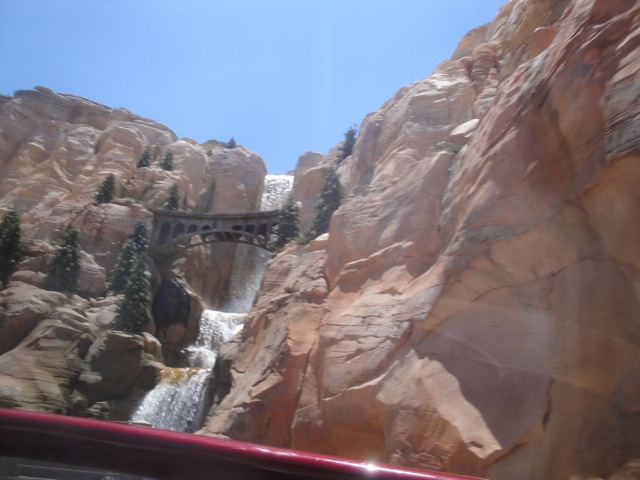
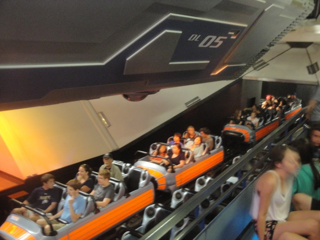
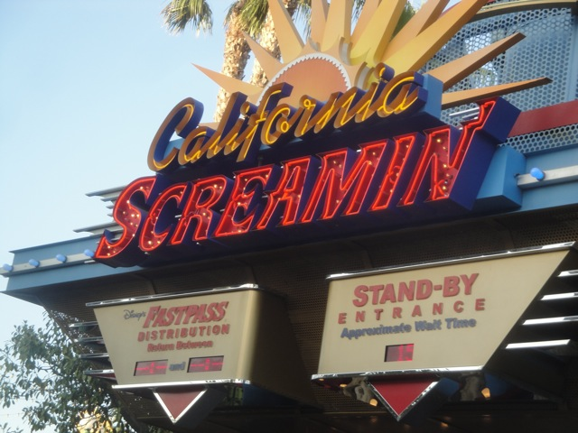
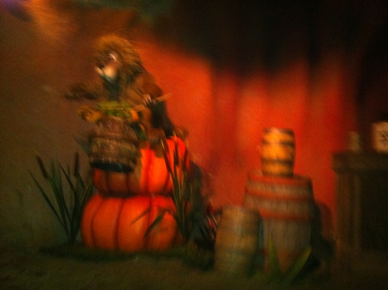

Disneyland Summer 2013
All right. The time has come for another visit to the Disneyland Resort since I hadn't visited the place since Christmas Time 2012, so this was our first visit in 2013.
Hey Alex!!! You wanna head on back to Napa!!?

Thank you Radiator Springs Racers Single Riders Line for allowing me to actually get on the ride. Gee, if only more parks would realize that they need to add Single Riders Line (particuarly those who just opened up a big meh coaster and hire me as an employee).
 "Pardon Me!!! I have nothing to say!!!!"
"Pardon Me!!! I have nothing to say!!!!"
 Why haven't more rides been built with this type of technology?
Why haven't more rides been built with this type of technology?
New for the Disneyland Resort!!! Magic!!!
Hey!!! Who wants to ride Big Thunder Mtn today!!?
Gee. I wonder why Thunder Mtn is closed today.
Here you can see what the old mountain looks like, and two photos up is how they're redesigning the Big Thunder Mtn.
You know, out of all the times I've been to Disneyland, I had NEVER done the Mark Twain Riverboat. So hey. Lets knock that out of the way.
If you ask, you can get a private ride up at the very top and even get to ring the bell and blow the whistle.
For those who do this, you get to sign the book so they all know who's done this.
"Why of course I'm qualified to drive this boat!!! I got my boating liscence from some random site on the Internet!!!" =)
Hello Tom Sawyers Island. Hows it going?
We had an awesome time up here. Not only did we get to ring the bell and blow the whistle, but the operator we talked to was totally awesome. We ended up talking about Theme Park Review, Incrediblecoasters, and how many old roller coaster websites from the early 2000s are now gone.
Oh sh*t. It appears that we have just entered a U.S Republican Congressman's wet dream about the future of the country.
Hmm. Should we go into Club 33 or Club 35?
"Hey there lucky person!!! Want 5 fast passes to Splash Mtn?" *snicker*
New for the Disneyland Resort in 2013 is the Princess Fantasy Faire.
Not amazing by any means, but it does look nice.
While riding Mr. Toads Wild Ride, we broke down right when we were in hell. I wonder if the Universe is trying to tell us something?
Lets go give the Abominable Snowman a visit.
"Hey, he's big, hairy, and can only communicate through screams, grunts, and stupid catchphrases. He's just like my fellow Napans!!"
 I believe the time has come for us to use our Space Mtn Fastpasses.
I believe the time has come for us to use our Space Mtn Fastpasses.
And yeah. Right before we got on Space Mtn, it goes 10-7.

Ugh, if we had just gotten on the ride a few minutes earlier, we would've gotten a lights on ride. Dammit!!!
We took a ride on the DCA Trolley.
Hey, if you saw just how far of a walk it is from the entrance to Tower of Terror, you'd take this tram too.
LIES!!!!! IT'S ALL NOTHING BUT LIES!!!!!! I'M NOT LIKE THAT!!!!!

Hey, you can't visit the Disneyland Resort and not take at least one ride on California Screamin.
 It may not be incredibly intense, but this ride is just a ton of fun. =)
It may not be incredibly intense, but this ride is just a ton of fun. =)
 California Screamin at sunset.
California Screamin at sunset.
Didn't take long for them to change that poster.
We decided to see Fantasmic tonight because not only have I seen World of Color many times already, but I haven't seen Fantasmic since 2003. So its been 10 years. And the show ranked higher than World of Color on my Top 10 Theme Park Shows List, yet I hadn't seen the show in 10 years. So yeah. Its time to fix that.
"Dammit!!! I thought I told you guys!!! No giant reptiles are allowed in Disneyland!!! You people working at Bag Check really need to do your job better."
So you've got no strings to hold you down Pinnochio? BULLSH*T!!! I can CLEARLY see them!!
Guys!!! This Fantasmic!!! Not a pirate fighting show!!! You're in the wrong place!!!
Gee. I sure hope that nothing goes wrong to ruin this night.
Sorry, we couldn't get all the villians. We're missing Cruella, Scar, Frollo, Jafar, and Hades. But we've still got the Evil Queen, Ursula, the Devil (Chernabog) and Malificent. *evil laugh*
So you're the cause of all these recent California Wildfires Malificent!!!
 Yeah. Fantasmic is a fantastic show!!!
Yeah. Fantasmic is a fantastic show!!!
Sorry Alex. They're all out of Mint Juleps.

Umm, what happened to the harmonica playing Racoon? Did he just overdose on crappy Southern Moonshine?
I think the fox and the dancing showbirds may also be suffering from Alcohol Poisening as they never moved at all. =)
Grr. Can't afford getting dinner. Must resort to eating my park map (A helpful strategy for our upcoming Texas Roadtrip).
Not amused about actually getting wet on Splash Mtn.
Home